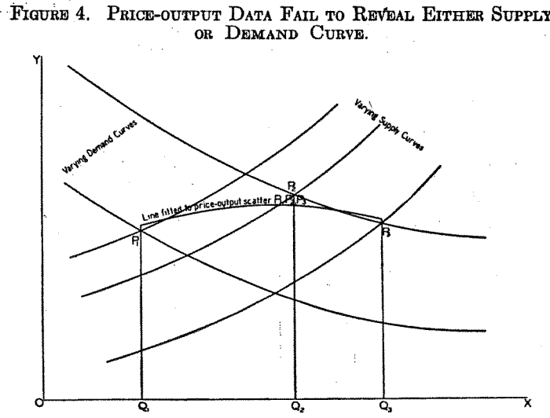

# load packages needed for the analysis
library(tidyverse)
library(AER)
library(haven)
# load self-writing tests
source('advanced_instrumental_variables2_test.r')3.2.2 - Advanced - Instrumental Variables 2
advanced
R
instrumental variables
causality
2SLS
regression
An introduction to estimating causal effects with instrumental variables on Jupyter and R.
Prerequisites
- A basic understanding of instrumental variables
- A basic understanding of Jupyter and R
- A theoretical understanding of linear regressions
Learning Outcomes
After completing this notebook, you will be able to:
- Understand how instrumental variables solve issues with omitted variable bias and endogeneity
- Choose appropriate instrumental variables
- Apply two-stage least-squares regressions (2SLS) in the context of undergraduate research using R
References
- CORE (Curriculum Open-access Resources in Economics) Econ. (n.d.). THE ECONOMY (1.14.1) [E-book]. Electric Book Works.
- Hanck, C., Arnold, M., Gerber, A., & Schmelzer, M. (n.d.). Introduction to econometrics with R [E-book]. University of Duisburg-Essen.
- Kleiber, Christian, and Achim Zeileis. 2008. Applied Econometrics with R. New York: Springer-Verlag.
- Kiviet, J. F., & Kripfganz, S. (2021). Instrument approval by the Sargan test and its consequences for coefficient estimation. Economics Letters, 205, 109935.
- Stock, James, H., and Francesco Trebbi. 2003. “Retrospectives: Who Invented Instrumental Variable Regression?” Journal of Economic Perspectives, 17 (3): 177-194.
- Wright, P. (1928). The Tariff on Animal and Vegetable Oils. The Macmillan Company.
Recap
In Instrumental Variables 1, we introduced instrumental variables and explained how instrumental variables can be used to solve issues with partial random assignment and OVB. We also showed how to adjust our specification for when the instrument is not randomly assigned. In this notebook, we assume knowledge of the material presented in Instrumental Variables 1 and turn to the issue of endogeneity.
Example 3 - Tariffs on Animal and Vegetable Oils
Economists attribute the first formal application of instrumental variable analysis to Philip G. Wright, in his 1928 review Tariffs on Animal and Vegetable Oils (Stock et al. 2003). In Appendix B, Wright discusses the economic effects of imposing tariffs in the imports of butter and flaxseed, which are both major inputs of animal and vegetable oils. Wright explains that to determine the effects of tariffs on the quantity of output and market price of the goods, we must find the elasticities of demand and supply of butter and flaxseed. The problem with estimating elasticities, argues Wright, is that we cannot estimate demand and supply curves from price-output data alone: the combinations of points are determined endogenously by both demand and supply conditions.
We explain it below.
The problem
Wright had to estimate demand and supply curves with data on prices and quantity of output. He explains that “if cost [supply] conditions remain fixed while demand conditions vary, prices will lie on the supply curves; if demand conditions remain fixed while cost [supply] conditions vary, prices will lie on the demand curve.”
In panel A of figure 3, the supply curve is kept fixed, so the combination of points \((P_{i}, Q_{i})\) must necessarily be caused by demand shifts. We can estimate the supply curve by connecting the points \((P_{i}, Q_{i})\). Panel B is analogous, albeit when demand is fixed and shifts in supply explain the combinations \((P_{i}, Q_{i})\). We can estimate the demand curve by connecting the points \((P_{i}, Q_{i})\).

We face a problem when neither the supply nor the demand curve remains fixed. When that happens “price-output data yield no direct information as to either curve.” That is, there is an infinite combination of simultaneous demand and supply shifts that could lead to the combination of points \((P_{i}, Q_{i})\).
In figure 4, Wright shows that if you connect the \((P_{i}, Q_{i})\) when both demand and supply shift, the curve recovered is neither the underlying demand nor the underlying supply curve.

Based on this information, Wright concludes that “the elasticities of supply and demand cannot be computed from price, output, and consumption data alone (…) elasticities of supply and demand can be computed only when assurance is obtained that [either] the cost [supply] or demand curve remains fixed.” Since in most situations we cannot know if either demand or supply is fixed, we have a problem of endogeneity.
The solution
Wright also provides a solution to the problem above: “in the absence of intimate knowledge of demand and supply conditions, statistical methods (…) must be based on the introduction of additional factors. Such additional factors may be factors which (A) affect demand conditions without affecting cost [supply] conditions or which (B) affect cost [supply] conditions without affecting demand conditions.” Based on these definitions and for the case of agricultural crops, answer the questions below.
Which of the following could be an example of “additional factor type A” as described by Wright?
- Amount of rainfall per harvest
- Price of a substitute for the crop
- GDP per capita
# Enter your answer below as "A", "B", or "C"
answer_1 <- "..."
test_1()Which of the following could be an example of “additional factor type B” as described by Wright?
- Yield per acre of the harvest
- Income taxes
- Marginal product of labor
# Enter your answer below as "A", "B", or "C"
answer_2 <- "..."
test_2()It should be clear that Wright’s “additional factors” were nothing more than instrumental variables. Let’s model Wright’s problem using the example of the demand of flaxseed.
Modeling the demand elasticity of flaxseed
We can estimate the relationship between the quantity and price of flaxseed with a model of the form:
\[ \log(P_i) = \beta_0 + \beta_1 \log(Q_i) + u_i \]
where
- \(P_i\) is the market price per kilogram of flaxseed for harvest \(i\)
- \(Q_i\) is the number of kilograms of flaxseed sold for harvest \(i\)
Our goal is to find an unbiased estimate of \(\beta_1\), which can be interpreted as the reciprocal of the elasticity of demand: the % change in price associated with 1% change in quantity. We cannot estimate \(\beta_1\) with OLS because the model is endogenous; \((P_{i}, Q_{i})\) are determined by both demand and supply jointly.
To solve this problem we need an instrument for quantity of flaxseed. The instrument must satisfy:
- Relevance: must have a causal effect on quantity of flaxseed
- Exogenous: must only affects the price of flaxseed through the quantity of flaxseed
- Random assignment: must not be correlated to the error term
A potential candidate for an instrument could be the amount of rainfall per harvest. It has a causal effect on quantity (more rain makes for a better harvest), does not affect price directly, and is a random event.
Now it’s your turn to model a solution to endogeneity in the context of cigarette consumption taxes.
Example 4: Pigouvian Taxes on Cigarettes
Pigouvian taxes are taxes on goods and services that generate negative externalities. Microeconomic theory says that to maximize social surplus in competitive markets, we should tax goods with negative externalities until their prices equal the marginal social cost of production.
Consumption of cigarettes have well known negative externalities; smoking cigarettes increases the risk of health problems, adding costs to public healthcare systems. Policy makers across the globe have attempted to eliminate these negative externalities by imposing Pigouvian taxes on cigarette purchases. To determine the optimal tax rate, economists need to estimate demand and supply curves, as well as the associated price elasticities for cigarettes.
In this example, you will try to estimate the price elasticity of demand for cigarettes with the dataset CigarettesSW from the package AER. CigarettesSW is a panel dataset that contains information about cigarette consumption as well as other economic indicators for all 48 continental federal states in the US from 1985 to 1995. For our analysis, we’ll only use data from the 1995 cross-section.
Run the cells below to load, filter, and see an overview of the dataset.
# load the dataset
data("CigarettesSW")
# run the command below to see a detailed description of the variables
#?CigarettesSW # filter dataset for the year 1995
c1995 <- subset(CigarettesSW, year == "1995")
head(c1995)Choosing our estimator
We’re interested in estimating the price elasticity of demand for cigarettes. For a single variable demand function, the price elasticity of demand is the coefficient \(\beta_1\) in the equation below.
\[ \log(Q_i) = \beta_0 + \beta_1 \log(P_i) + u_i \]
where
- \(Q_i\) is the number of cigarette packs per capita sold for state \(i\)
- \(P_i\) is the after-tax average real price per pack of cigarettes for state \(i\)
Why can’t we estimate \(\beta_1\) with a simple regression of \(\log(Q_i)\) on \(\log(P_i)\)?
- We are faced with endogeneity
- There is reverse causality
- \(\log(P_{i})\) is correlated to the error term
- All of the above
# Enter your answer below as "A", "B", "C", or "D"
answer_3 <- "..."
test_3()Having ruled out the possibility of an OLS estimator, we turn to IV estimators. List the conditions that our variable needs to meet to be an appropriate instrument:
- Must not be correlated to the error term
- Must have a causal effect on the price of cigarettes
- Must have a causal effect on the demand of cigarettes
- Must only affect the price of cigarettes through the demand of cigarettes
- Must only affect the demand of cigarettes through the price of cigarettes
# Enter your answer as a string of letters in alphabetical order ex: "ABD", "BCE", or "CDE"
answer_4 <- "..."
test_4()A variable that appears to meet the criteria above is the general state-level sales taxes. Sales taxes increase the prices of cigarettes in the market and should not have a direct effect on quantity demanded. Although sales taxes are definitely not randomly assigned, we’ll assume for now that they are uncorrelated with the error term in our model.
We can calculate general state-level sales taxes by subtracting tax from taxs on our dataset. We’re going to call the new variable sales_tax, coded in dollars per pack.
Below we compute the real sales tax and real per capita prices.
# compute the real sales tax
c1995$sales_tax <- ((c1995$taxs - c1995$tax) / c1995$cpi)
# compute real per capita prices
c1995$rprice <- (c1995$price / c1995$cpi)
head(c1995)Validating instrument relevance
Before we run our IV regression with ivreg(), let’s validate our choice of the instrument. We think sales taxes increase the price of cigarettes. Let’s calculate the correlation between both variables to check that our data matches our economic logic.
Think deeper: what if we found a negative correlation between the instrument and the treatment? How would that affect our choice of the instrumental variable?
# check the correlation between sales tax and price
cor(c1995$sales_tax, c1995$rprice)A correlation of approximately 0.686 indicates that sales_tax and rprice are indeed positively related: higher sales taxes lead to higher prices.
We can further test the relevance assumption by looking at the relationship between the instrument and the treatment on the first stage regression. If we let sales_tax equal \(Z\), what would be the specification of our first stage regression?
- \(\log(Q_i)= π_0 + π_1Z_i + ν_i\)
- \(\log(P_i)= π_0 + π_1Z_i + ν_i\)
- \(\log(Q_i)= π_0 + π_1\widehat{\log(P_i)} + π_2Z_i + ν_i\)
- \(\log(P_i)= π_0 + π_1\widehat{\log(Q_i)} + π_2Z_i + ν_i\)
# Enter your answer below as "A", "B", "C", or "D"
answer_5 <- "..."
test_5()Let’s run the first stage regression using the function lm().
# run the first stage
cig_s1 <- lm(log(rprice) ~ sales_tax, data = c1995)
# test the significance of the coefficients with robus standard errors
coeftest(cig_s1, vcov = vcovHC)We find that an increase of 1 dollar per pack in sales taxes leads to an increase of approximately 3 percent in the real sales price. The effect is significant at the 0.1% significance level.
It is very important that the coefficient on our first stage is statistically significant. If it’s not, we do not have enough evidence to reject the null hypothesis that the instrument is not related to the variable of interest, and the instrument fails to satisfy the necessary assumption of instrument relevance.
Rule of thumb: it is recommended that the t-statistic of the first stage should have absolute value larger than 3.2 to satisfy instrument relevance (Stock and Yogo, 2005).
How much of the variation in the variable of interest does our instrument actually predict?
We can find this by calculating the \(R^2\) of our regression, the goodness-of-fit measure for linear regression models. It indicates the percentage of the variance in the dependent variable rprice explained by the independent variable sales_tax.
# R^2 of the first stage regression
summary(cig_s1)$r.squaredThe \(R^2\) of our regression reveals that 47.1% of the variation in after-tax prices is explained by the variation of sales taxes across states. This suggests that our instrument has significant predictive power, which can make us more confident of our results.
Unfortunately, there is no quantitative way to validate the IV assumption of exogeneity. Instead, we must rely on our economic logic: we think it is reasonable to assume that general state-level taxes are not correlated to the error term in our model.
Estimating the elasticity of demand with 2SLS
Now, we’re ready to run our IV regression with ivreg().
# run the IV regression with 'ivreg()'
cig_ivreg <- ivreg(log(packs) ~ log(rprice) | sales_tax, data = c1995)
# test the significance of the coefficients with robus standard errors
coeftest(cig_ivreg, vcov = vcovHC)The regression output shows that an increase of 1% in price is associated with a decrease of 1.08% in quantity demanded, indicating that the demand for cigarettes is quite sensitive to changes in price.
But we’re not done yet. As always, we need to take a closer look at our model, understand the shortcomings of our modeling choices, and try to fix them.
Demand for cigarettes with multiple regressors
In the previous example, we chose sales price as the only regressor of our demand function. However, we know that there are several other socioeconomic variables that affect the demand for goods and services. We have data on average income for each state. As income likely affects both the demand for cigarettes and our instrument1, we should consider adding it as a control. Let’s fit the model again but this time with real per capita income \(I\) as an additional regressor.
\[ \log(Q_i) = \beta_0 + \beta_1 \log(P_i) + \beta_2 \log(I_i) + u_i \]
Let’s calculate the real per capita income and store it as rincome on our dataset c1995.
# add rincome to the dataset
c1995$rincome <- with(c1995, income / population / cpi)Let’s run ivreg() again but this time controlling for rincome.
Remember that we have to specify the control on both sides of the vertical bar.
# run the IV regression with 'ivreg()' controlling for income
cig_ivreg2 <- ivreg(log(packs) ~ log(rprice) + log(rincome) | log(rincome) + sales_tax, data = c1995)
# test the significance of the coefficients with robus standard errors
coeftest(cig_ivreg2, vcov = vcovHC)The estimated effect is approximately -1.14, a stronger effect than our single regressor estimate. Since we expect income to have a positive effect on quantity demanded, this result makes intuitive sense. If those were the only sources of variation affecting our model, we could be confident about our results.
Think deeper: Are there any potential sources of bias that we fail to control for in our model?
Demand for cigarettes with multiple instruments
What if we have two potential candidates for instrumental variables?
For example, we could have potentially used pigouvian taxes that have already been implemented as an instrument for cigarette prices. The cigarette-specific taxes increase the market price of cigarettes, and, if they are not correlated to the error term, meet the exogeneity condition to be an instrumental variable.
IV regressions are flexible enough to allow for multiple instruments. Let’s calculate the real pigouvian taxes, store them as cig_tax in our dataset, and run ivreg() with both sales_tax and cig_tax as our instruments.
# add cigtax to the data set
c1995$cig_tax <- c1995$tax/c1995$cpi
# run `ivreg()` with multiple instruments
cig_ivreg3 <- ivreg(log(packs) ~ log(rprice) + log(rincome) |
log(rincome) + sales_tax + cig_tax, data = c1995)
# test the significance of the coefficients with robust standard errors
coeftest(cig_ivreg3, vcov = vcovHC)The elasticity of demand caculated with both instruments is even greater than that estimated with the previous models. We find that the demand for cigarettes decreases by 1.28% for every 1% increase in price.
Our standard errors decreased significantly when we added a second instrument to our specification. That happens because we’re using more variation to explain the treatment. Nevertheless, it is important to remember that lower standard errors only add value to the model if the instruments are valid: if they meet the conditions for instrumental variables.
Let’s revisit our discussion of instrument validity with our extended model.
Validating instrument relevance with multiple instruments
Specifications with multiple instruments still need to meet the relevance criteria. The relevance condition is only met if the instruments are jointly significant, which can be determined through an F-test of the first stage coefficients. If we reject the null hypothesis of the F-test, it means that at least one of the coefficients is significant.
Rule of thumb: it is recommended that the F-statistic should be at least 10 to satisfy instrument relevance (Stock and Yogo, 2005).
Our first stage with a control and 2 instruments is:
\[ \log(P_i)= \pi_{0} + \pi_{1}Z_{1i} + \pi_{2}Z_{2i} + \pi_{3}\log(I_{i}) + ν_i \]
where
- \(\log(P_{i})\) is our treatment
log(rprice) - \(Z_{1i}\), \(Z_{2i}\) are our instruments
sales_taxandcig_tax - \(\log(I_{1})\) is our control
log(rincome)
Let’s run the joint hypothesis F-test with the function anova(). The inputs to anova() are (1) the model of interest and (2) a restricted version of the model of interest omitting the variables being tested.
# run first stage
multiple_s1 <- lm(log(rprice) ~ sales_tax + cig_tax + log(rincome), data = c1995)
# run restricted version of first stage
multiple_s1_restricted <- lm(log(rprice) ~ log(rincome), data = c1995)
# test the significance of the coefficients with `anova`
anova(multiple_s1_restricted, multiple_s1)The F-test output shows that our F-stat is 244, sufficient to reject the null hypothesis that our instruments are significant at the 0.1% significance level. This suggests that our instruments do indeed meet the relevance criteria.
Now we turn to exogeneity: the instruments need to be uncorrelated to the error term of the original model.
In our case, that means that sales_tax and cig_tax need to be uncorrelated to \(u_{i}\) in the specification below.
\[ \log(Q_i) = \beta_0 + \beta_1 \log(P_i) + \beta_2 \log(I_i) + u_i \]
As we’ve seen, there is no easy way to test for this condition when we have a single instrument - we must instead rely on our economic logic about the variables and their relationships. However, there is a clever way of testing for exogeneity when we have more than one instrument.
Validating instrument exogeneity with multiple instruments
If both instruments are relevant and exogenous with respect to the model, then their estimated causal effects must be unbiased. Think about it: if both instruments isolate good variation of the variable of interest, these two slices of variation must represent the same relationship between the variable of interest and the outcome. Therefore, to test for exogeneity when we have more than one instrument, we can calculate the 2SLS estimate using each instrument separately and compare both estimates. If they are not the same, chances are at least one of the instruments is not exogenous.
Note that this test only works if we have more instruments than variables of interest, a condition denominated overidentification.
Let’s run two IV regressions: one just with sales_tax as an instrument and the other just with cig_tax as an instrument. If the estimated coefficients from these two regressions are not similar, we probably have at least one invalid instrument.
# run the IV regression with `sales_tax` as an instrument
sales_tax_iv <- ivreg(log(packs) ~ log(rprice) + log(rincome) | log(rincome) + sales_tax, data = c1995)
# test the significance of the coefficients with robust standard errors
coeftest(sales_tax_iv, vcov=vcovHC)
# run the IV regression with `cig_tax` as an instrument
cig_tax_iv <- ivreg(log(packs) ~ log(rprice) + log(rincome) | log(rincome) + cig_tax, data = c1995)
# test the significance of the coefficients with robust standard errors
coeftest(cig_tax_iv, vcov=vcovHC)Our estimates appear to be quite dissimilar, which could indicate that at least one of our instruments is not exogenous. Let’s use our economic knowledge to interpret this result.
Perhaps pigouvian taxes differ greatly based on the strength of the cigarette industry in each state. For example, states with cigarette manufacturing facilities might have both a cultural inclination to smoke more and have strong lobbying groups that keep excise taxes low. That is something that we don’t control for in our regression, which could possibly undermine the exogeneity of cig_tax, deeming it an inappropriate instrument.
It could also be possible that the difference between both 2SLS estimates is actually just sampling variance. If we look at the confidence interval of the coefficients above, we see that each confidence interval contains both of the estimated effects.
To certify ourselves that the difference between both estimates is actually material (and not just sampling variance) we need to do a statistical test, called the overidentifying restriction test with the J-statistic. The statistical theory of this test is beyond the scope of this notebook but in the next section we learn to analyze the test outputs given by the software.
Analyzing diagnostic tests of ivreg()
The function ivreg() has diagnostic tests that estimate the exogeneity test as well as other tests related to the IV assumptions. Let’s examine the summary() output of ivreg() for our cig_ivreg3 specification.
Remember that
cig_ivreg3is the IV regression with both of the instrumentssales_taxandcig_tax, and with the controlrincome.
# run summary of our IV regression output
summary(cig_ivreg3, diagnostics=TRUE)The diagnostic tests conducted by ivreg() are (1) Weak instruments (2) Wu-Hausman (3) Sargan test.
- Weak instruments test: tests for instrument relevance with the F-statistic. This test is equivalent to what we did with
anova(): if we reject the null, it means that at least one instrument is not weak. - Wu-Hausman test: tests for the endogeneity of the variable of interest. If we reject the null, it means that the treatment is indeed endogenous, so we cannot use OLS to estimate the causal effect.
- Sargan test: tests for instrument exogeneity with the J-statistic. This is the overidentifying restrictions test we needed for the previous section. If we reject the null, it means that at least one of the instruments is not exogenous, and consequently, invalid.
Our output shows that we reject the null for the Weak instruments test with a very high statistic, we reject the Wu-Hausman test at the 10% significance level, and we do not reject the Sargan test.
The results of tests (A) and (B) were expected based on our previous analysis. The Weak instruments test corroborates our finding of instrument relevance with anova() and the Wu-Hausman test confirms what we already know about the endogenous relationship of price and quantity. What is interesting from the output of the diagnostics is that we don’t reject the null hypothesis for exogeneity. That suggests that the difference in the 2SLS estimates that we found in the previous section was due to sampling variance, and not caused by invalid instruments.
Nevertheless, it is important to keep in mind that the results of these tests are just one piece of supporting evidence for modeling choices. The tests by themselves are not sufficient to support choices of instrumental variables, and more broadly, choices of empirical methods.
In this example, we should be skeptic of the resuls of the Sargan test. The Sargan test commits a large proportion of type II error, which can lead to substantial estimation errors if the invalid instruments are stronger than valid instruments (Kripfganz and Kiviet, 2021). If our test failed to identify cig_tax as an invalid instrument, this could substantially undermine our model. Adding cig_tax to our main specification is a matter of judgment.
Summary
In the notebooks Instrumental Variables 1 and 2 we learned how to:
- Use instrumental variables to solve partial random assignment, OVB, and endogeneity
- Choose appropriate instrumental variables
- Interpret the causal estimates calculated with IV regressions
- Run IV regression in R using the
AERpackage
As a supplement to these notebooks, we recommend reading the paper Acemoglu et. al (2001). In this paper, the authors use IVs to trace the determinants of cross-country differences in GDP per capita in the late 20th century.
Footnotes
States with high incomes per capita tend to have higher income taxes, raising proportionally more money through income taxes than sales taxes.↩︎